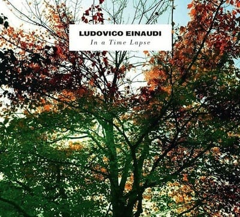

Джанго Освобожденный
На последнем ряду какой-то чувак весь фильм прям заливался. Очень веселое кино!
На последнем ряду какой-то чувак весь фильм прям заливался. Очень веселое кино!
Чуваки анимировали статические изображения из архива Всемирного фонда дикой природы (WWF).
Сделаешь доброе дело, подпишешь петицию, и тут же тебя завалят каким-то долбанным спамом, от которого еще и не отписаться, похоже, без регистрации. И в следующий раз подумаешь десять раз, надо оно тебе или нет :( Картинка боян-боян, ага.

Дяденька Эйнауди в очередной раз заделал очень приятный альбом. Целый день сегодня у меня играет.
Пришел к отцу в гости, съел там кусок торта с, как потом оказалось, подсолнечными семечками (странно добавлять их в торт, да). Сижу теперь такой красивый, вспоминаю молодость)
Блин, круто как.

Очень приятный Охуенный альбом!

Клевые какие портреты!
Клевая тема)